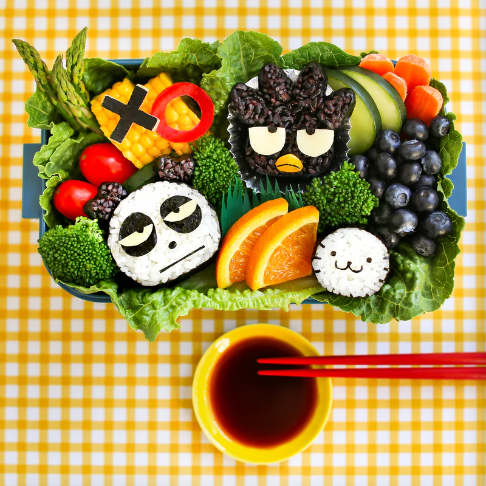

Badtz-Maru Bento

Description
Badtz-maru may be grumpy, but this bento box will definitely cheer him up!
Ingredients
- Your favorite veggies and fruit
- Dried seaweed
- Mozzarella cheese
- 1 cup black rice
- 1 cup white rice
Steps
- Cook the rice according to your rice cooker.
- Steam the veggies to your desired texture.
- Arrange the fruits and veggies in your bento box.
- Wrap the rice in seaweed. Cut out Batz-maru's face on the cheese and seaweed and decorate.